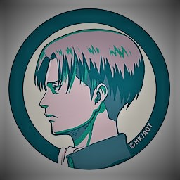
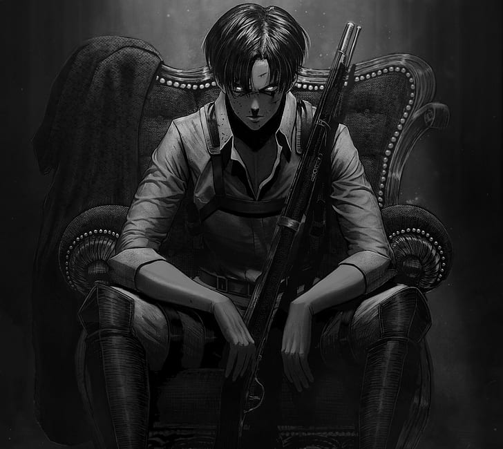
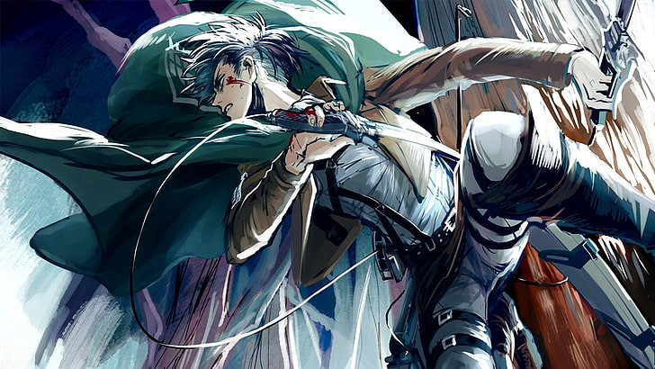
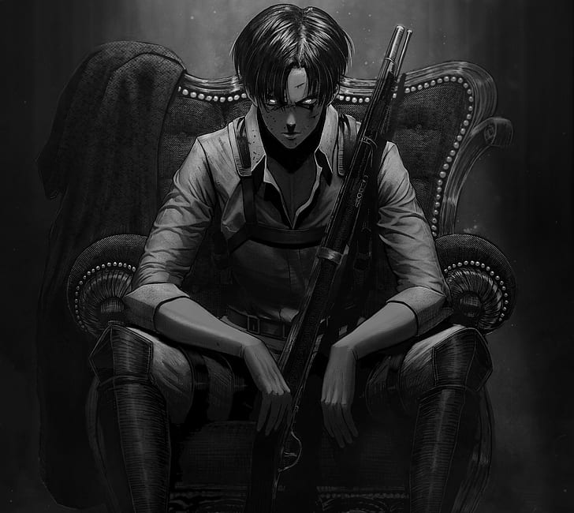
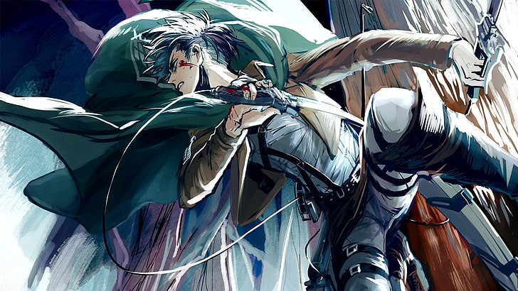

Levi Ackerman: Humanity's Strongest Soldier.
Levi Ackerman, often formally referred to as Captain Levi, is the squad captain (Heishichō, lit. "leader of the soldiers") of the Special Operations Squad within the Survey Corps and is widely known as humanity's strongest soldier.
I want to put an end to that recurring nightmare, right now. There are those who would get in my way. But I'm fine playing the role of the lunatic who kills people like that. I have to be ready to rearrange some faces. Because I choose the hell of humans killing each other over the hell of being eaten. — Levi explains his mentality to his squad.
Personality
Levi is described as a "clean freak" by those who know him personally, as he prefers his environment and himself to be spotlessly clean. He is averse to having either himself or his equipment soiled, and he has been known to wipe down his blood-smeared blades while still on the battlefield. However, he will not hesitate to touch filth if he deems it necessary.[4] Despite his preoccupation with cleanliness, Levi is abrasive and not very approachable. He rarely shows emotion, giving a cold impression to others. His manner of speaking tends to be blunt and insulting, his comments are frequently coarse or otherwise inappropriate, and he is not above provoking or belittling those who oppose or irritate him. His sense of humor tends toward the vulgar, insulting, and dark. All of this makes him unsettling to a great number of people. Though Levi is aware that his battle skill is in a different league from that of almost any other human soldier alive, he is not particularly arrogant about it, as he knows from experience that no human soldier is invulnerable. Few will argue with his claims that only he can handle certain difficult tasks because he has proven his ability to accomplish them. Despite his obedience to Erwin, Levi operates rather independently. Many of his Titan kills are solo, accomplished with little direct cooperation from other soldiers (due to him usually assigning them to hunt other Titans in the vicinity). Although he is looked up to by many and does not hesitate to give orders when necessary, he does not see himself as a leader in the way Erwin is. He does not seem to have much use for hierarchy in general, and he leaves decisions up to his subordinates as often as he can. Levi's obedience is strictly limited to individuals he respects, and he has no problem showing open disdain for authority from anyone outside of this circle. At Eren's tribunal, he insulted the merchants by calling them "pigs" and told the Military Police that they were not competent enough to handle Eren,[21] mocking several MPs by observing that they have never battled or even seen a single Titan. He even sardonically suggests that they join the Survey Corps, which caused them to back off. He openly resents most of the MPs for their continual attempts to undermine the Survey Corps, and also presumably because of the criminal life he led before he joined the Corps. Although he rarely shows it, Levi has a strong sense of morality and empathy. One of his most defining characteristics is the great value he places on preserving human life; this is especially shown when it was revealed that all Titans might have once been human themselves. The thought that he had unknowingly been killing humans all this time disturbs him greatly. Though Levi bore no malice against Eren, he was willing to resort to violence in order to save his life at his tribunal, eventually asking Eren whether he resented him for the beating. Levi himself has stated that he hates unnecessary casualties, and he tells his subordinates to use their judgment so that they can avoid blunders that may cost them their lives.Gallery
 


